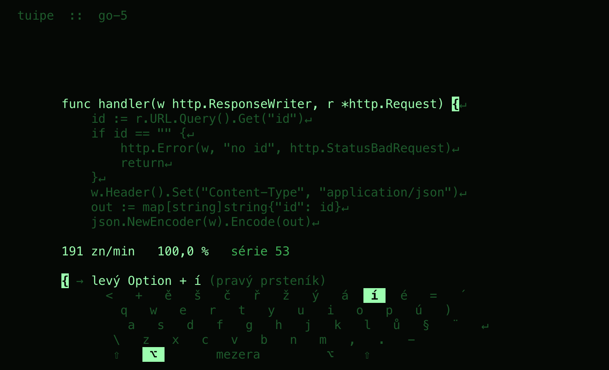
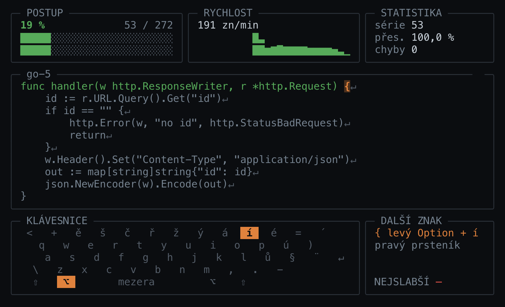

Všemi deseti,
včetně { a }.
{ → levý Option + í (pravý prsteník)
tuipe je kurz psaní všemi deseti pro českou klávesnici, který vede až k symbolům a ke kódu. Většina kurzů skončí u písmen. Na české klávesnici ale práce teprve začíná: číslice jsou za Shiftem, závorky za Option a ď se píše na dva stisky. Každá lekce vás nejdřív naučí, pak procvičí a nakonec změří.
curl -fsSL https://raw.githubusercontent.com/jiripisa/tuipe/main/install.sh | sh irm https://raw.githubusercontent.com/jiripisa/tuipe/main/install.ps1 | iex Vložte do terminálu a spusťte tuipe. Skript ověří kontrolní součet a nepotřebuje sudo.
Vyladěno pro macOS. Pro Linux a Windows jsou binárky hotové, ale vlastní rozložení klávesnice zatím nemají. Aplikace to řekne, poradí, jak přidat vlastní, a nechá vás pokračovat s rozložením z macOS.
Máte Go?
go install github.com/jiripisa/tuipe/cmd/tuipe@latest Lekce
Kurz má 12 kapitol: domovská řada, horní a dolní řada, velká písmena, česká diakritika, číslice, symboly se Shiftem a s Option, vzácné a mrtvé klávesy, skutečný kód a nakonec všechno dohromady. V každé kapitole je několik krátkých lekcí, obvykle o jednom páru kláves.
Všechny lekce jsou otevřené. Seznam ukazuje dva řádky hvězd, přesnost a rychlost, a rychlost Testu, který je získal. Kurzor stojí na další lekci, která nemá hvězdu v žádném řádku. Po spuštění tak stačí Enter a pokračujete.

Výuka, Trénink, Test
Každá lekce má tři části a vyberete si, kterou chcete.
Výuka řekne, co se učíte a kterým prstem se každá klávesa píše, a ukáže ji na klávesnici. Pak vás provede krátkými řádky: nejdřív každý znak sám, pak dva střídavě, nakonec jeden řádek ze slov. Nic se neměří a nic se neukládá do statistik. Po dokončení u lekce svítí ✓ hotovo.
Trénink je kolo na znacích lekce, krátký, střední nebo dlouhý. Nápověda tu pomáhá a nic se nehodnotí. Výsledek vidíte vedle minulého a nejlepšího Tréninku stejné délky.
Test je kolo ze všeho, co se učilo až do této lekce, bez nápovědy. Jen Test dává hvězdy, a to dva řádky: za přesnost a za rychlost.

Hvězdy a hodnost
Test dá dva řádky hvězd, každý jednu až tři. Za přesnost jsou tři hvězdy jen pro Test bez chyby, dvě od 99 % a jedna od 97 %. Za rychlost se hvězdy dávají podle cílů, které má každá lekce vlastní. Lekce ukazuje oba řádky jediného Testu, svého nejlepšího, tedy toho s nejvíc hvězdami přesnosti. Čistší, ale pomalejší Test tak může nahradit rychlejší Test s chybami a lekci pak mohou ubýt hvězdy rychlosti.
Z hvězd nejlepších Testů všech lekcí vzniká hodnost od Interna po Principala. Po Testu vidíte rychlost, přesnost, čas, hvězdy obou řádků, znaky, na kterých jste chybovali nejvíc, a srovnání s minulým a s nejlepším výsledkem. Enter vás vrátí do lekce, R pustí Test znovu na novém textu.

Kde co je
Terminál vidí jen výsledný znak, ne klávesu. tuipe proto zná rozložení macOS Czech QWERTY a umí říct přesně, co stisknout a kterým prstem. V Tréninku se nápověda objeví, když zaváháte. Jak se znak učíte, chodí později a nakonec jen po druhé chybě na stejném místě.
- @
- pravý Option + ě
- ~
- pravý Option + ř
- |
- pravý Shift + \
- ď
- levý Shift + ´, pak d
- °
- levý Option + =, pak mezera



{ v Tréninku. V Testu nápověda není.Tři styly
Stejné kolo, tři obrazovky. V aplikaci je přepnete klávesou Ctrl+T, i uprostřed psaní. Tady klikněte a celá stránka změní barvy.


go-1.Statistiky
Historie je prostý seznam vašich kol: den, Trénink nebo Test, rychlost, přesnost, hvězdy a lekce. Klávesou F ji omezíte jen na Trénink nebo jen na Test. Vedle toho je klávesnice obarvená podle slabých míst, trendy, rekordy a počet dní v řadě, kdy jste psali.
Rychlost se všude počítá ve znacích za minutu. Hvězdy, trendy a rekordy čtou jen Testy, slabá místa a dny v řadě i Tréninky.

Co v tom není
Účty, telemetrie, žebříčky ani konfety. Data leží u vás na disku v obyčejných souborech. Na síť jde jen tuipe upgrade a nejvýš jednou denně kontrola nové verze, kterou lze v nastavení vypnout.